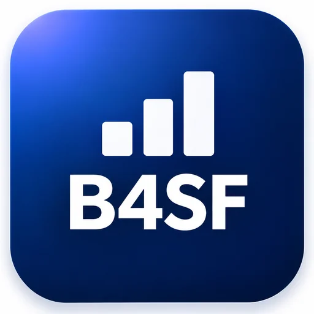
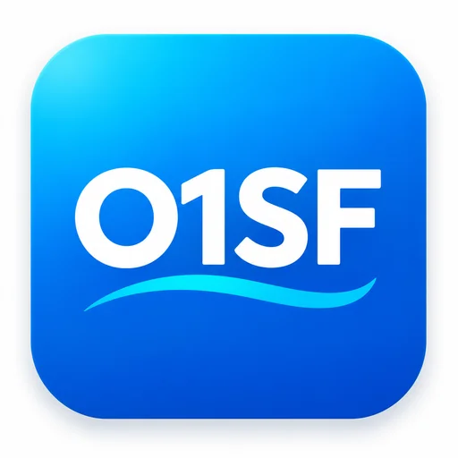
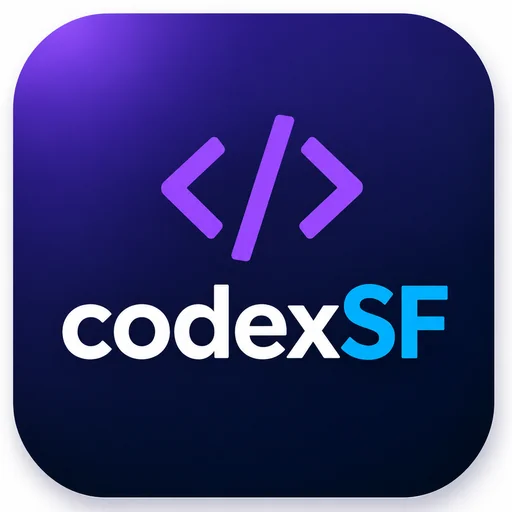
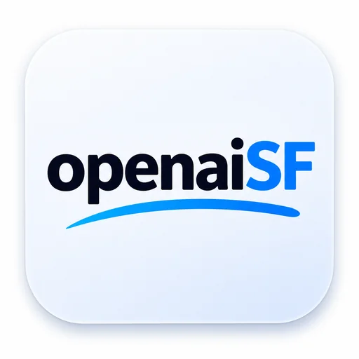
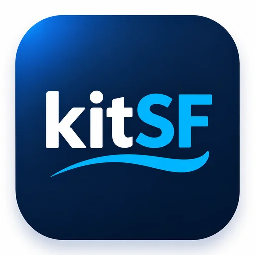
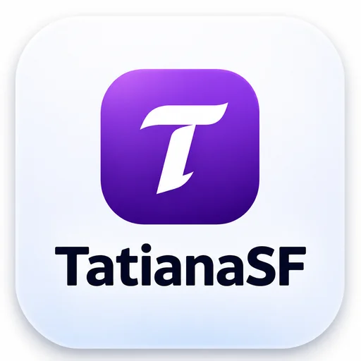
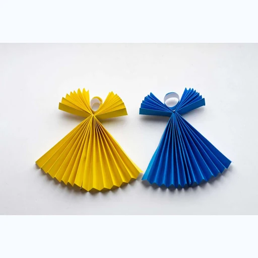
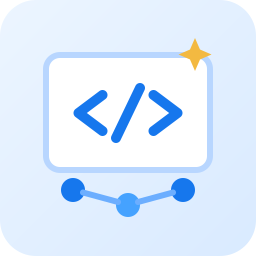

B4SF
Startup events connecting founders, builders, investors, and operators in San Francisco.
Startup ecosystem · Technology communities
Visit B4SFPROJECT DIRECTORY
Projects Alex Rom is building, growing, and supporting. This directory describes each project and links to its public website; inclusion does not imply a legal ownership claim.

Startup events connecting founders, builders, investors, and operators in San Francisco.
Startup ecosystem · Technology communities
Visit B4SF
3-week U.S. market-entry program for international founders.
International business · Entrepreneurship
Visit O1SF
Open-source hub for Codex workflows, HackKit, and builder events.
Engineering · Developer tools
Visit codexSF
Directory of AI companies across the San Francisco Bay Area.
Artificial intelligence
Visit openaiSF
Invests in talented people and supports their professional growth.
Venture building · Entrepreneurship
Visit kitSF
Entrepreneurship, mentorship, and connections across business communities.
Entrepreneurship · Technology communities
Visit TatianaSF
An international memorial initiative honoring Ukrainian children killed by Russia's war.
Social impact · Memorial initiative
Visit Angels of Ukraine
Organizing high-impact hackathons and tech events for San Francisco's builder community.
Hackathons · Events · Technology communities
Visit HackathonSFConceptual venture tiles are not official logos unless explicitly identified as owner-supplied imagery.